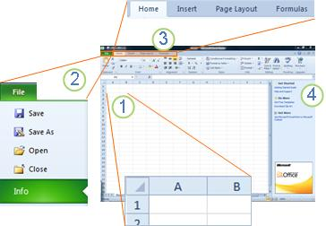

Microsoft Excel Starter 2010 is a spreadsheet program designed for everyday tasks such as setting up a budget, maintaining an address list, or keeping track of a list of to-do items. Excel Starter is part of Microsoft Office Starter 2010, and comes pre-loaded on your computer.
Excel Starter 2010 is very similar to Microsoft Excel 2010 in appearance. If you are new to the Ribbon interface or the Backstage view, Excel Starter gives you an opportunity to get accustomed to the new interface before upgrading to Excel 2010.
Excel Starter differs from the complete version of Excel in that it includes display advertising, and it does not support the advanced features of the complete version of Excel. If you find that you want more features, you can upgrade to Excel 2010 right from Excel Starter 2010. Just click Purchase on the Home tab on the ribbon.
Open Excel Starter with the Windows Start button.
Click the Start button . If Excel Starter is not included among the list of programs you see, click All Programs, and then click Microsoft Office Starter.
Click Microsoft Excel Starter 2010.
The Excel Starter startup screen appears, and a blank spreadsheet is displayed. In Excel Starter, a spreadsheet is called a worksheet, and worksheets are stored in a file called a workbook. Workbooks can have one or more worksheets in them.

1. Columns (labeled with letters) and rows (labeled with numbers) make up the cells of your worksheet.
2. Clicking the File tab opens the Backstage view of your workbook, where you can open and save files, get information about the current workbook, and perform other tasks that do not have to do with the content of the workbook, such as printing it or sending a copy of it in e-mail.
3. Each tab in the ribbon displays commands that are grouped by task. You'll probably spend most of your time using the Home tab, when you're entering and formatting data. Use the Insert tab to add tables, charts, pictures, or other graphics to your worksheet. Use the Page Layout tab to adjust margins and layout, especially for printing. Use the Formulas tab to make calculations on the data in your worksheet.
4. The pane along the side of the Excel Starter window includes links to Help and shortcuts to templates and clip art, to give you a head-start on creating workbooks for specific tasks, such as managing a membership list or tracking expenses. The pane also displays advertising and a link to purchase a full-feature edition of Office.